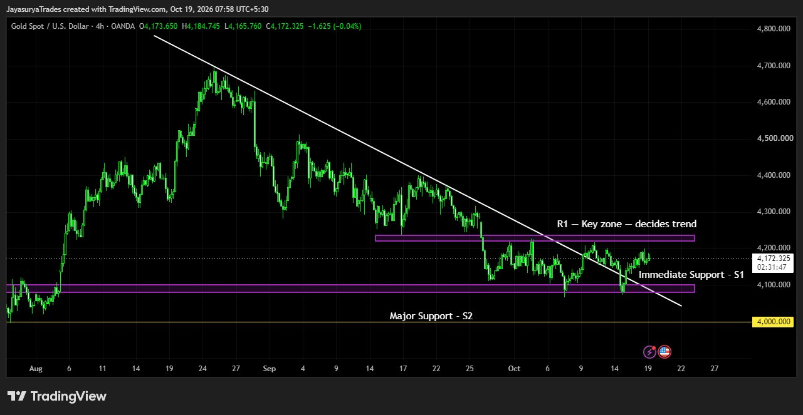

For this Monday Market Focus, I am looking at Gold / XAUUSD. Gold is currently moving sideways between the chart-marked resistance R1 and support S1. These two levels are the key decision points to watch as price attempts to leave this range.
Gold has also broken above a descending trendline on the four-hour time frame. However, the trendline breakout alone is not enough to confirm a sustained uptrend. A break above R1 is the key bullish confirmation I am watching. On the other side, a break below S1 could bring the major support at 4,000 into focus.
Current structure: Sideways between chart-marked R1 and S1
Bullish decision level: A confirmed break above R1 could support the beginning of an uptrend
Bearish scenario: A break below S1 could bring major support at 4,000 into focus
Major downtrend confirmation: A break below 4,000 on the daily time frame
Approach: Wait for price to break the range and confirm direction

Current Structure — Sideways Between R1 and S1
Gold is currently trading sideways between R1 and S1. Until price breaks out of this range, the next direction remains unconfirmed. These levels are important because a break above R1 could signal the beginning of an uptrend, while a break below S1 could open a potential move toward 4,000.
The descending trendline breakout on the four-hour chart is worth monitoring, but it does not by itself establish that the downtrend has reversed. I want to see how price behaves around R1 and S1 before treating either direction as confirmed.
Key Levels to Monitor
The main levels in this analysis are the chart-marked R1 and S1, together with 4,000 as major support. The chart provides the marked R1 and S1 zones; their numerical values are not stated in these notes.
Bullish Scenario — Break Above R1
If Gold breaks above R1, it could support a bullish move and the potential beginning of an uptrend. This is the confirmation I am watching before considering the sideways range to have broken to the upside. The four-hour descending trendline breakout is an early development, but R1 remains the key decision zone in this analysis.
A move above the trendline without a break above R1 is not enough on its own to confirm a sustained uptrend. I will continue to treat the bullish case as conditional until price provides the required confirmation.
Bearish Scenario — Break Below S1 and 4,000
If Gold breaks below S1, the market could move down toward 4,000, the major support level marked as S2 in this analysis. A move toward 4,000 is a potential scenario, not a certainty.
If Gold then breaks below 4,000 on the daily time frame, that would be the key confirmation for continuation of the downtrend. Until that happens, the 4,000 level remains a major support to monitor rather than a confirmed breakdown.
For Investors — Consider the Broader Setup
The four-hour descending trendline breakout may be a constructive development for investors who have already bought Gold. If you already hold a position, you may consider your own plan for averaging on the buy side. If you have not bought yet, this may be a price area to consider for a fresh buy, based on your own investment plan and risk tolerance.
This analysis does not suggest selling existing holdings simply because Gold is moving sideways. However, neither the trendline breakout nor the current price guarantees an upward move. R1 remains the key bullish decision level, while a break below S1 could bring 4,000 into focus. If price breaks below 4,000, investors should reassess their plan and consider whether a further discounted price could emerge.
For Traders — Wait for the Range Breakout
Potential Buy Scenario
If price breaks above R1, traders and intraday traders may look for a buy entry according to their own setup and confirmation rules. Avoid treating the four-hour trendline breakout alone as confirmation of a sustained uptrend.
Potential Sell Scenario
If price breaks below S1, traders and scalpers may look for a short-term sell opportunity, with 4,000 as the major support level to keep in view. The actual entry should depend on the trader's own confirmation and risk-management rules.
Watch the 4,000 Level
A break below S1 could lead toward 4,000, but the broader downtrend continuation scenario requires a break below 4,000 on the daily time frame. Keep the distinction between a move toward support and a confirmed breakdown clear.
Key Takeaways
- Gold is currently moving sideways between chart-marked R1 and S1.
- A break above R1 could support a bullish move and the potential beginning of an uptrend.
- The four-hour descending trendline breakout alone does not confirm a sustained uptrend.
- A break below S1 could bring major support at 4,000 into focus.
- A daily time-frame break below 4,000 is the key confirmation for downtrend continuation.
- Investors should make averaging or fresh-buy decisions according to their own plan and risk tolerance.
- Traders can monitor the R1 and S1 range breakout for potential short-term entries, with confirmation and risk management.
My focus for Gold this week is the sideways range between R1 and S1. A confirmed break above R1 could support a bullish scenario, while a break below S1 could bring 4,000 into focus. The next direction should be assessed from how price behaves around these levels.
R1 is the bullish decision level.
S1 is the immediate downside trigger.
A daily break below 4,000 confirms the downtrend continuation scenario.
One day. One market. One focused analysis.
Levels. Structure. Scenarios. Confirmation.
No hype. Just how the market behaves.
Watch. Wait. Confirm.
Risk Disclaimer
This analysis is provided for educational and informational purposes only and
should not be considered financial advice or a recommendation to buy or sell
any financial instrument.
Trading involves substantial risk. Always conduct your own research and follow
your own trading plan and risk-management rules.